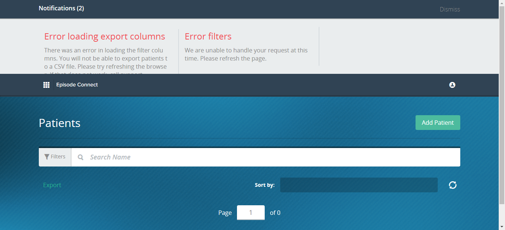

Total Tests
Total Steps
Total Time Taken (Current Run)
0h 3m 8s+519ms
Total Time Taken (Overall)
0h 3m 8s+519ms
Start
2017-10-06 18:45:11
End
2017-10-06 18:48:19
Pass Percentage
Environment
| Param | Value |
|---|---|
| User Name | akshat.jain |
| OS | Windows 10 |
| Java Version | 1.8.0_144 |
| Host Name | IITC-WS-QA27 |
| Extent Cucumber Reporter version | v1.1.0 |
| Browser version | v31.0 |
| Cucumber version | v1.2.3 |
| Selenium version | v2.53.0 |
| Browser Name | Firefox |
Tests
-
Feature: Episode 2.0 Export Patient List fail2017-10-06 18:45:11 2017-10-06 18:48:19 0h 3m 7s+880ms
Status Timestamp Details -
2017-10-06 18:45:11 2017-10-06 18:46:45 0h 1m 34s+161ms failverify Export drawer User Interface
Status Timestamp StepName Details 18:45:27 Line Number: 4 - Given I am on the login page PASSED 18:45:27 Snapshot below: 18:45:27 Line Number: 5 - When I enter email field qa.admin@yopmail.com for login PASSED 18:45:27 Snapshot below: 18:45:27 Line Number: 6 - And I enter password field Episode1! for Login PASSED 18:45:27 Snapshot below: 18:45:29 Line Number: 7 - Then I click Access button PASSED 18:45:29 Snapshot below: 18:45:32 Line Number: 8 - Then I should see Tile text Episodes 2.0 PASSED 18:45:32 Snapshot below: 18:45:39 Line Number: 9 - When I click on the "Episodes 2.0" tile PASSED 18:45:39 Snapshot below: 18:45:39 Line Number: 10 - Then I verify current page "Remedy Partners" title PASSED 18:45:39 Snapshot below: 18:46:43 11Then I click on "Post Acute" tab in the filter bar on patients page Post Acute')] Build info: version: '2.53.0', revision: '35ae25b1534ae328c771e0856c93e187490ca824', time: '2016-03-15 10:43:46' System info: host: 'IITC-WS-QA27', ip: '10.96.97.201', os.name: 'Windows 10', os.arch: 'amd64', os.version: '10.0', java.version: '1.8.0_144' Driver info: org.openqa.selenium.chrome.ChromeDriver Capabilities [{applicationCacheEnabled=false, rotatable=false, mobileEmulationEnabled=false, networkConnectionEnabled=false, chrome={chromedriverVersion=2.32.498550 (9dec58e66c31bcc53a9ce3c7226f0c1c5810906a), userDataDir=C:\Users\AKSHAT~1.JAI\AppData\Local\Temp\scoped_dir8224_23703}, takesHeapSnapshot=true, pageLoadStrategy=normal, databaseEnabled=false, handlesAlerts=true, hasTouchScreen=false, version=61.0.3163.100, platform=XP, browserConnectionEnabled=false, nativeEvents=true, acceptSslCerts=true, locationContextEnabled=true, webStorageEnabled=true, browserName=chrome, takesScreenshot=true, javascriptEnabled=true, cssSelectorsEnabled=true, setWindowRect=true, unexpectedAlertBehaviour=}] Session ID: 7481649e0293d26fba18e2abe09222a3 at org.openqa.selenium.support.ui.WebDriverWait.timeoutException(WebDriverWait.java:80) at org.openqa.selenium.support.ui.FluentWait.until(FluentWait.java:261) at com.remedy.baseClass.BaseClass.iWillWaitToSee(BaseClass.java:435) at com.remedy.Episode2.PatientsPage.iClickTabInFilterBarOnPatientsPage(PatientsPage.java:38) at stepDefination.Episode2.PatientsPageSteps.i_click_on_tab_in_the_filter_bar_on_patients_page(PatientsPageSteps.java:27) at ?.Then I click on "Post Acute" tab in the filter bar on patients page(src/test/Features/Episode2.0/ExportPatientList/exportPatientList.feature:11) Caused by: org.openqa.selenium.NoSuchElementException: no such element: Unable to locate element: {"method":"xpath","selector":"//button//span[contains(text(),'Post Acute')]"} (Session info: chrome=61.0.3163.100) (Driver info: chromedriver=2.32.498550 (9dec58e66c31bcc53a9ce3c7226f0c1c5810906a),platform=Windows NT 10.0.14393 x86_64) (WARNING: The server did not provide any stacktrace information) Command duration or timeout: 10.05 seconds For documentation on this error, please visit: http://seleniumhq.org/exceptions/no_such_element.html Build info: version: '2.53.0', revision: '35ae25b1534ae328c771e0856c93e187490ca824', time: '2016-03-15 10:43:46' System info: host: 'IITC-WS-QA27', ip: '10.96.97.201', os.name: 'Windows 10', os.arch: 'amd64', os.version: '10.0', java.version: '1.8.0_144' Driver info: org.openqa.selenium.chrome.ChromeDriver Capabilities [{applicationCacheEnabled=false, rotatable=false, mobileEmulationEnabled=false, networkConnectionEnabled=false, chrome={chromedriverVersion=2.32.498550 (9dec58e66c31bcc53a9ce3c7226f0c1c5810906a), userDataDir=C:\Users\AKSHAT~1.JAI\AppData\Local\Temp\scoped_dir8224_23703}, takesHeapSnapshot=true, pageLoadStrategy=normal, databaseEnabled=false, handlesAlerts=true, hasTouchScreen=false, version=61.0.3163.100, platform=XP, browserConnectionEnabled=false, nativeEvents=true, acceptSslCerts=true, locationContextEnabled=true, webStorageEnabled=true, browserName=chrome, takesScreenshot=true, javascriptEnabled=true, cssSelectorsEnabled=true, setWindowRect=true, unexpectedAlertBehaviour=}] Session ID: 7481649e0293d26fba18e2abe09222a3 *** Element info: {Using=xpath, value=//button//span[contains(text(),'Post Acute 18:46:43 Snapshot below: 18:46:43 12Then I click on "Readmission Discharges" tab in the filter bar on patients page SKIPPED 18:46:43 13Then I wait to the see the visibility of loader to disappear SKIPPED 18:46:44 14Then I verify "Export" button is appearing beside the number of patients present on the patient page SKIPPED 18:46:44 15When I click on export button present on the Patient Page SKIPPED 18:46:44 16Then I should see export drawer is appearing on clicking on export button SKIPPED 18:46:44 17And I should see "Export" button is still appearing beside patient count after export drawer opened SKIPPED 18:46:44 18Then I verify patient count and export are alligned in the same place SKIPPED 18:46:44 19Then I verify "Cancel" button is appearing in the export drawer box SKIPPED 18:46:44 20Then I verify "Export" button is appearing in the export drawer box SKIPPED 18:46:44 21Then I verify opened drawer is appearing on the export drawer box SKIPPED 18:46:44 22Then I verify search area is appearing on the export drawer box SKIPPED 18:46:44 23Then I verify filters are appearing in the export drawer box SKIPPED 18:46:44 24Then I verify "Patients with uncompleted attestations will not be included in this export" message is appearing after selecting the filter to export SKIPPED 18:46:44  -
2017-10-06 18:46:45 2017-10-06 18:48:19 0h 1m 33s+519ms failCheck Export functionality
-
{kind=link}
{kind=link}